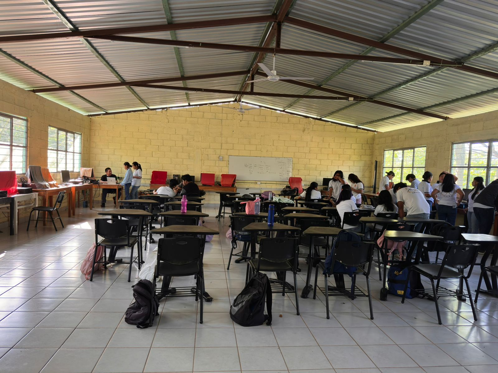
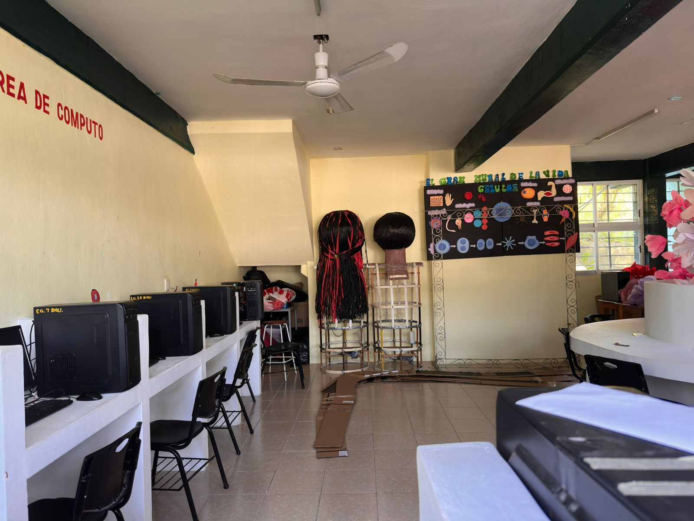

¿Para qué nos ayuda la ofimática?
Eficiencia
Optimiza las tareas escolares y administrativas mediante software especializado.

Organización
Permite gestionar grandes volúmenes de datos en hojas de cálculo y documentos.
Explorando las herramientas que mueven al mundo desde nuestro nivel académico.

Optimiza las tareas escolares y administrativas mediante software especializado.
Permite gestionar grandes volúmenes de datos en hojas de cálculo y documentos.
Más que computadoras, es la ciencia de procesar información de forma automática.
